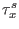
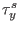
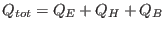

Next: Module airsea Up: Air-Sea interaction Previous: Air-Sea interaction Contents
This module provides the surface forcing for GOTM. For all dynamic
equations, surface boundary conditions need to be specified. For the
momentum equations described in section 3.5 and
section 3.6, these are the surface momentum fluxes  and
 in Nm . For the temperature
equation described in section 3.10, it is the total surface heat flux,
. For the temperature
equation described in section 3.10, it is the total surface heat flux,
|  | (230) |
There are basically two ways of calculating the surface heat and momentum fluxes implemented into GOTM. They are either prescribed (as constant values or to be read in from files) or calculated on the basis of standard meteorological data which have to be read in from files. The necessary parameters are the wind velocity vector at 10 m height in ms, the sea surface temperature (SST in Celsius), air temperature in Celsius), air humidity (either as relative humidity in %, as wet bulb temperature or as dew point temperature in Celsius) and air pressure (in hectopascal), each at 2 m height above the sea surface, and the wind velocity vector at 10 m height in ms. Instead of the observed SST, also the SST from the model may be used. For the calculation of these fluxes, the bulk formulae of Kondo (1975) or () are used.
Karsten Bolding 2012-12-28